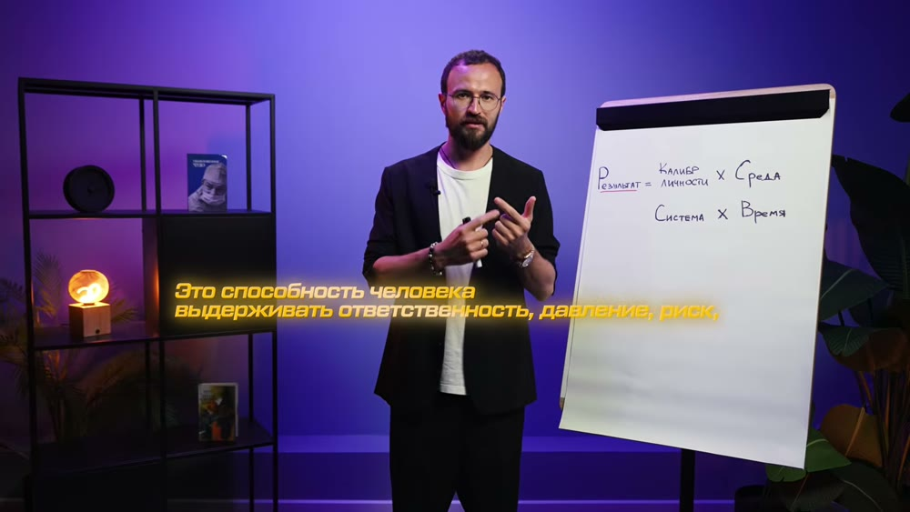
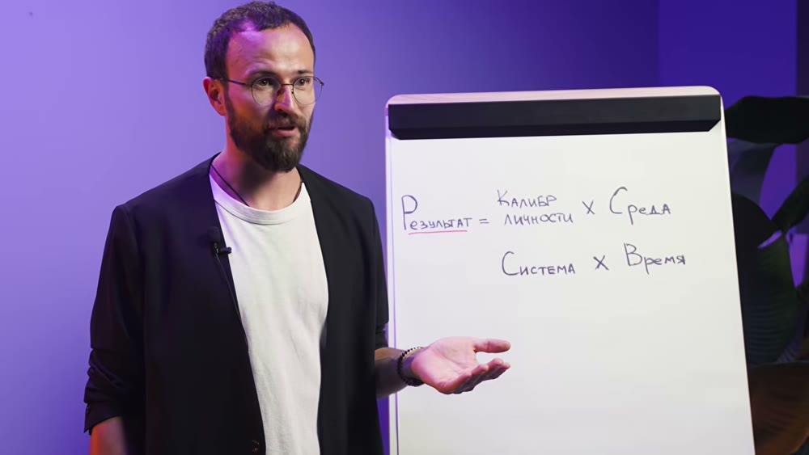
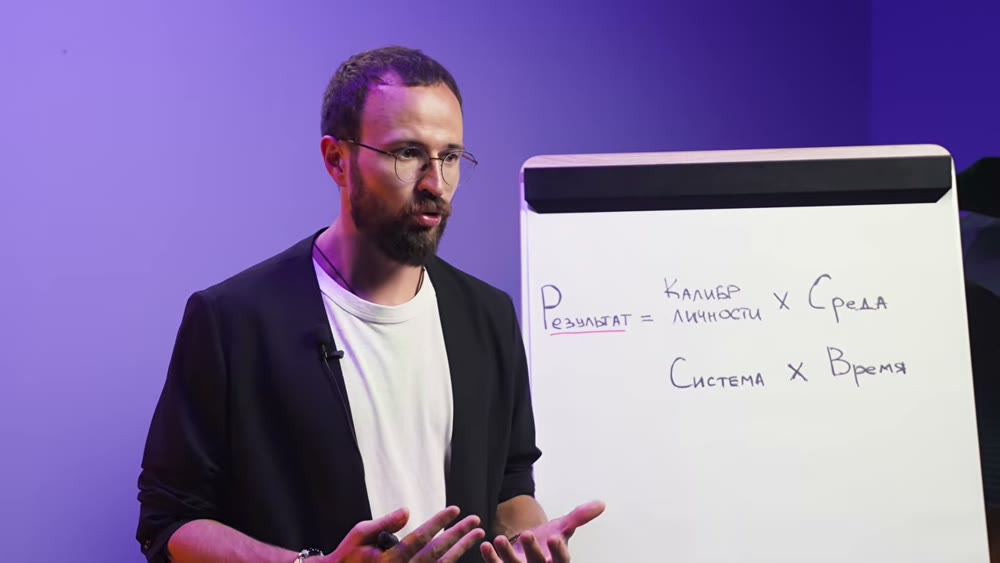

Разбор интро: Михаил Гребенюк, «Рост калибра личности к 2027. Рассказал всё, что знаю»
YouTube, 7 августа 2026, 29 минут, ~81 тыс. просмотров. Разбирается только интро — первые 4 минуты 45 секунд, где автор продаёт досмотр, а не объясняет тему.
Где кончается интро: 4:45. Три признака сошлись. Плотность монтажа: в интро 57 склеек, средний план 5 секунд; сразу после 4:45 темп падает и следующие три минуты идут ровным разговором. Слово-переключатель: на 4:40 звучит «об этом и будет наше последующее видео, в том числе это» — прямой мостик, а на 4:43 начинается «Наш калибр личности может расти двумя путями», то есть первый пункт содержания. Смена времени глагола: до 4:45 сплошные обещания («расскажу», «поделюсь», «узнаете дальше»), после — настоящее время разбора.
4:45длина интроот старта до перехода к разбору калибра на 4:45
57склеекдетектор смен сцены, порог 0.25
5,0 ссредний план285 секунд ÷ 57 склеек
179слов/миннорма разговорной русской речи ~130
847слов всегоза 4 минуты 45 секунд
19мыслейзаконченных смысловых кусков
22сценыпосле отбора: без дублей говорящей головы
Пост: тот же заход связным текстом
Почему вы пашете, а результата нет
Есть формула, которая объясняет любой результат — в бизнесе, в продажах, в спорте. Четыре множителя: калибр личности, среда, система и время. Не сумма, а именно произведение: если хотя бы один множитель равен нулю, он обнуляет всё остальное. Вы можете фигачить сутками и искренне не понимать, куда девается отдача.
Проверьте себя. Если ваши амбиции заметно выше ваших результатов — где-то в формуле провал. Не потому, что вы ленивый: за последние четыре-пять лет в стране случились такие макроэкономические сдвиги, что пострадали очень многие, и далеко не только по своим ошибкам. Экономика давит на всех.
Начнём с первого множителя — калибра личности. Калибр — это способность человека выдерживать ответственность, давление, риск и стресс определённого уровня. На одной и той же нагрузке один сломается эмоционально, а другой почему-то нет. Разница — в калибре. Людей можно выстроить, как физрук выстраивал класс по росту, только не по росту, а по калибру. И с возрастом это совпадает плохо: у двадцатипятилетнего калибр бывает больше, чем у сорокалетнего предпринимателя с двадцатью годами опыта.
Ключевая мысль: масштаб бизнеса никогда не будет больше, чем калибр его владельца. Если вы много работаете, стараетесь, а какая-то невидимая сила не пускает вас на следующий уровень — скорее всего, вы просто не доросли калибром до тех результатов, к которым тянетесь. Дальше два пути: ждать, пока калибр дотянется сам, органически, — или поработать над собой и расширить его быстрее, специальными упражнениями.
Кто это говорит: Михаил Гребенюк, отец пятерых детей-погодков, в прошлом учитель истории и мастер спорта по бальным танцам. За 14 лет построил крупнейшую в стране компанию по построению отделов продаж — тысяча консалтинговых проектов, 700 млн рублей выручки в пике. Компанию по курортной недвижимости в Крыму с долей 20% рынка, которую потом продал. Сообщество предпринимателей на 16 000 активных участников. В прошлом году купил медицинскую компанию, которой сам был клиентом семь лет, и делает из неё первый в России медицинский family office.
В ролике — что расширяет калибр, почему он растёт даже если ничего не делать, и лайфхаки, как его стимулировать искусственно. А что такое среда, система и время — ближе к концу.
Цепочка ходов
Крючок-вопрос→Формула-обещание→Анонс серии→Боль→«Докажу»→Программа ролика→Отложенная выдача→Ставка: ноль обнуляет всё→Снятие вины→Определение→Метафора→Приманка→Главный тезис→Показ боли живьём→Развилка ждать/работать→Знакомство→Авторитет цифрами→Кросс-промо→Мостик в тему
Я, наблюдая за развитием предпринимателей и своим развитием, пришёл к выводу, что для того, чтобы достичь суперкрутого результата в любой области, необходимо, чтобы у нас была формула из четырёх множителей: калибр личности, среда, система и время.
Мы подготовили для вас с командой целую серию полезных видео на моём YouTube-канале, в котором я подробно расскажу про каждую из них, что можно сделать, чтобы усилить каждый из множителей — чтобы вы достигали других результатов, которых на сегодняшний день в жизни до сих пор не имеете.
Если вы чувствуете, что ваши текущие жизненные амбиции слишком высоки, а результаты пока ещё их явно не достигают, то, скорее всего, у вас есть провал в одном или нескольких множителях этой формулы. И я вам это докажу.
Конкретно в этом видео мы с вами поговорим про первый множитель — калибр личности. Ну а подробней, что такое калибр, среда, система и время, вы узнаете ближе к концу ролика. А сейчас мы как будто с вами берём лупу и наедем на этот элемент.
Важно, что даже если вы не думаете об этой формуле, она всё равно на вас работает. Если хотя бы один из четырёх этих множителей будет равен нулю, он обнулит результаты всей формулы. И вы в итоге будете думать, что вы очень сильно пашете, фигачите. Но на самом деле результата у вас нет.
А прежде чем мы перейдём к разбору темы калибра личности, я бы хотел начать с того — поскольку это наше первое видео в этой серии — что сейчас в стране за последние 4–5 лет случились невероятные макроэкономические сдвиги. И огромное количество людей пострадало. Кто-то по своим ошибкам, но понятное дело, что в целом на нас с вами давит экономика.
Итак, что же такое калибр личности? Определение звучит так: калибр личности — это способность человека выдерживать ответственность, давление, риск, стресс определённого уровня своей жизни.

1:50Развилка «один ломается — другой нет»231 сл/мин · разгон
И есть вещи, на которых один человек сломается эмоционально, а есть давление, нагрузка, на которой другой человек почему-то не ломается. И разница будет именно в их калибре.
Вспомните физкультуру: любой наш физрук пытался выстроить нас по росту. Так, в принципе, и людей можно поставить не по росту, а по размеру калибра их личности. И это, кстати, иногда не очень совпадает с тем, сколько им на самом деле лет. Может быть, человек возрастом 25 лет, но его калибр будет значительно больше, чем у сорокалетнего предпринимателя с двадцатилетним опытом.

2:20Приманка: что будет в ролике172 сл/мин · ровно
И в этом ролике я расскажу вам о том, что расширяет наш калибр, что делает этот множитель больше единички — чтобы он был у вас полтора-два или три и умножал всю формулу в целом. И почему, даже если вы ничего не будете делать в своей жизни, всё равно ваш калибр будет расти. А также поделюсь лайфхаками, как этот калибр можно дополнительно искусно стимулировать.
И если вы много работаете, много стараетесь, но как будто какая-то невидимая сила вас не пускает на новый уровень — то, скорее всего, это происходит потому, что вы калибром не доросли до тех результатов, к которым вы стремитесь.

3:03Развилка ждать/работать + вторая приманка148 сл/мин · тормозит
И вам придётся либо ждать, пока органически ваш калибр дотянет до этого масштаба, либо придётся попахать, поработать над собой, чтобы ваш калибр расширился быстрее. И для этого нужно будет поделать определённые упражнения, о которых вы узнаете дальше.
Кто меня не знает — меня зовут Михаил Гребенюк. Я многодетный отец, у меня пять детей погодок. В прошлом я учитель истории и мастер спорта по спортивно-бальным танцам. Но в 20 лет я решил завершить обе эти карьеры и себя пробовать в предпринимательстве.
И за следующие 14 лет мне удалось построить самую крупную компанию в стране по построению отделов продаж. Мы реализовали тысячу консалтинговых проектов. Это как компания Маккинзи, только для малого бизнеса. В пике достигли выручки 700 млн рублей.
Мне удалось построить компанию по продаже курортной недвижимости в Крыму с 2021 года, и мы заняли 20% рынка курортной недвижимости Крыма. Потом продал долю в этой компании. И также мы построили самое крупное сообщество в нашей стране для предпринимателей — «Аномалия», «Прорыв», «Экспонента», в котором на текущую секунду больше 16 000 активных участников.
А в том году я взял для себя новый вызов. Я купил компанию, в которой у меня 15 лет работала тёща. Моя тёща врач-кардиолог, терапевт. И я купил компанию, чьим клиентом я сам уже являюсь 7 лет — «Эс Клиника», двадцатилетняя медицинская компания. Сейчас развиваю первый в России медицинский family office для обслуживания семей премиум-сегмента.
Кстати, прямо сейчас мы в реалити рассказываем на моём YouTube-канале во влоге, как мы строим эту компанию — со всеми её ошибками, проблемами, достижениями, результатами. Уже сняли десятки серий. Ну ещё я блогер, веду YouTube-канал, мне нравится делиться какими-то своими осознаниями про бизнес. Собственно, об этом и будет наше последующее видео, в том числе это.